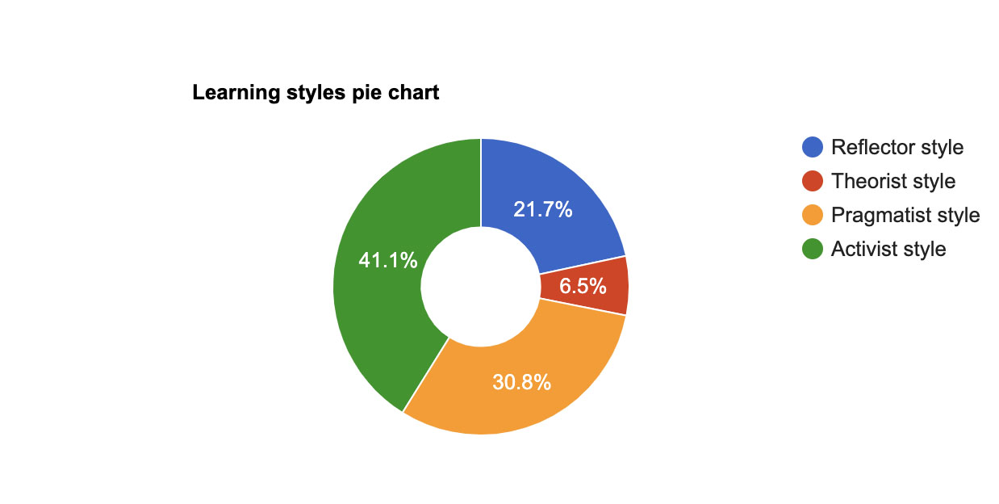
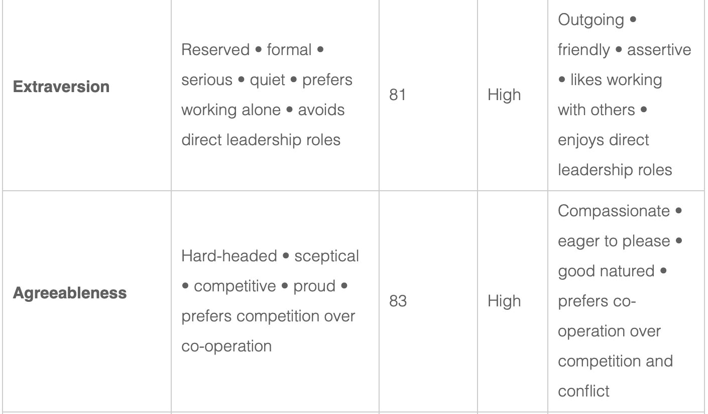

Adair
Grant
s3872722, adair_grant@live.com  .
.

Previous Work Experience
For the last 9 years I have been working as cabin crew for Jetstar Airways and then Qantas whom I am still employed by however currently stood down. During this time, I have accrued skills in customer service, safety and policy & procedures. I enjoyed the unpredictability of this job and the fact that it gave me the opportunity to travel as well as interact with people from all over the world & being one of the first faces people see coming into Australia. I have recently begun working for the within the Victorian Government with the Department of Justice.

My Hobbies & Interests
I have a passion for traveling and have travelled to all continents but Antartica. My favourite trips have been while traveling Europ and was planning to travel to the 30th country id visit before my 30th birthday in December however this plan has also been derailed by COVID. I am also intereted in all things fashion and beauty related from fashion design to make-up and health & fitness. I used to make my own formal clothes and make my own halloween costumes every year.


Interest in IT
As stated previously my employment recently came to an abrupt holt as have many in the current pandemic. I was sitting at home with not much to do after spending longer at home than I had for years and I started doing free courses on Coursera. While I was browsing the free courses, I came across a course on Python, given that I had never heard of Python I decided to YouTube it and ended up down a massive wormhole. This is where my interest in IT began. At a similar time, a friend of mine messaged asking how I was and what I was up to. I mentioned that I was doing some free courses online and she told me that universities were offering 6-month courses to help retrain those effected by COVID. I checked out the RMIT website and when I was browsing the different courses that were available I noticed an Undergraduate Certificate in IT and remembered the black hole I had gone down and applied for the course. I hope to obtain a well-rounded education in IT featuring a variety of programming languages as well as developing further ideas about which specific areas of IT I am best suited to.
Ideal Job
https://www.seek.com.au/job/50287018?ref=savedThis position is for a junior web developer and states that it would be good for someone who had recently finished university. As my interest in IT has only recently peaked, I’ve not had the opportunity to fully explore the options that are encumbered under the massive umbrella of IT. However, this job stood out to me as the company portrayed a nurturing, fun, modern and relaxed environment that I appreciate in workplaces. I think that working with the right group of people can make almost any job fun. The skills required for this position are; Shopify, CSM, WordPress, CSS3, JavaScript and Magneto. Although my knowledge of IT isn’t extensive at this point, in doing this activity I have gained experience in html5 which is required for this position, and my real-world experience has given me great skills in communication, teamwork and customer service which will also be useful within this role. I hope that by the time I finish studying I will have acquired the skills required however I may have to do some personal development in programmes such as Shopify.
Personal Profile
Myer Briggs Test
ENFP-A Campaigner personality type
A strength of this personality type is that they are enthusiastic and great communicators. I think this means that I will benefit from working in a team as it gives me the opportunity to discuss ideas with others. The weaknesses listed are that this personality type have poor practical skills, find it difficult to focus and overthink things, team members with different personality types could have a positive influence as they could be more confident. This personality type also benefits from experiencing things which corresponds with what the results of my ‘Learning Style” test.
Learning Styles Test
The activist and Pragmatist learning style are best suited to me. Some good learning methods for me are; brainstorming, group discussions, case studies and problem setting. Activities that allow me to immerse myself in. the content are the best way for me to learn. Working in a team will be beneficial as it will allow me to discuss and work through a problem.
5 Personalities Test
I scored very highly in agreeableness, this means when working in a team I need to be conscience that I need to express my opinion and not be worried about expressing my opinion. I scored very low in Conscientiousness which means I can be disorganised and struggle with ridged structure, this could be something that may annoy team mates especially those who represent the opposite end of the scale. When picking a team, I should be cautious not to pick too many team members with a similar way of thinking as there could be a lack of progress.

IT Project Idea
Overview
My idea for an app is a skin care planner. This is an app that allows users to input different skincare products to form their own skincare regimes, and then displays on a day by day basis which products they plan to use AM/PM.
Motivation
I came up with this idea as I have an extensive skincare regime consisting of over 50 products that have different benefits and need to be used at different intervals. I found myself trying to find an app that would allow me to input the products that I had and would give me a list of what I would use on which day. I looked on the app store on my phone and despite there being some options none of the apps available had the particular features that I was looking for.
Description
Skincare is a massive boom industry! As social media takes over and beauty standards become more out of reach, people are willing to pay more money than ever to stay young and beautiful. All of these products add different benefits to your skin and are to be used at different times and regularity. My app would allow users to input their own skincare products and assign a regularity to the product. For example, vitamin C should only be used in the morning, retinol should only be used every second night something should only be used 3 times a week and users will be reminded every morning sun care is essential. Users would be able to check off that they had used the products so that they are sure they have completed their skincare for the day. It’s important that the presentation of the app is bright and cheerful. Eventually I would like to involve aestheticians in the development of the app to advise users when they are attempting to input skincare products that will have contradictory reactions.
Tool and Technologies
In the development stage I would need to develop some new skills to achieve this IT project such as Swift and XCode. If I decided I wanted to launch the app I would need to make an ‘App Developer Account’.
Skills Required
n order to produce this app, I would need to become familiar with the programming language swift and I would have to learn ow to use XCode. I would also need to develop skills in adobe illustrator to create mock-ups of what I plan the app to look like
Outcome
This app will allow users to manipulate their skincare to their requirements and keep a record of what they are putting on their skin. It could also help users to identify if they have allergic reactions to specific ingredients as they will have a record of what they have put on their skin on what days.
References
- https://www.16personalities.com/
- http://www.emtrain.eu/learning-styles/
- https://www.123test.com/personality-test/